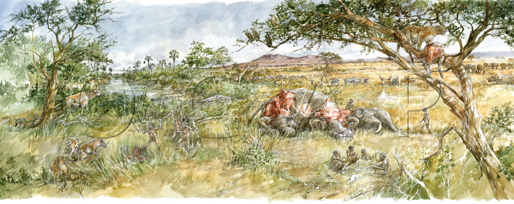
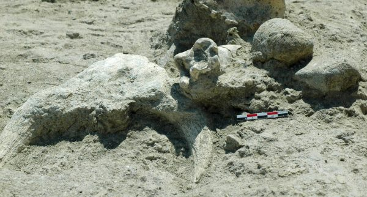
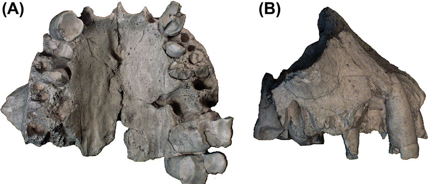
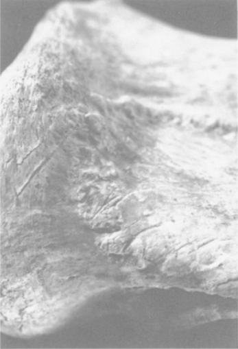

Olduvai Gorge has one of the earliest evidence of the existance of human acestors...
The complex ecological relationships were common at Olduvai Gorge and suggest that early hominins were far from the "apex predators" that modern humans are today. Their carnivorous portions in their diets varied seasonally or climatically. (HWKEE)
Olduvai Gorge also has the earliest evidence of “persistent butchery of megafauna,” such as elephants, giraffe, and hippos, and it was “opportunistic” for them to acquire “carcass foods.” (Horton)
OH 13, “a paratype of Homo habilis”, and the stratigraphic position of the MNK Skull site provide the last evidence of Homo habilis and of “a handaxe-free lithic assemblage” at Olduvai Gorge, marking the end of Oldowan at Olduvai. (de la Torre et al.)
Whether the early hominins at Olduvai Gorge were hunters or scavengers is debatable, but most archaeologists believe that they were the latter. At FLK-Zinjanthropus, bone assemblages of “birds, fish amphibians, and large mammals” with cut marks have been found. According to these discoveries, archaeologists like Henry Bunn believe that early hominins “systematically” use stone tools to “butcher the meaty carcasses” of small and large animals and that “substantial quantities of meat and marrow” were probably consumed by them. However, Lewis Binford disagrees with it and indicates that early hominins more likely created the cut marks after carnivores predated these animals. (Bunn et al.)

An artistic reconstruction of the environment and activities undertaken by hominins at HWKEE, based on OGAP’s excavations.

Faunal remains in associations with stone tools at HWKEE

OH 62 maxilla (cast) attributed to Homo habilis, Olduvai Gorge, Tanzania, c. 1.8 mya. (A) Occlusal view, (B) right lateral view.

Parmularius altidens scapula with dismembering cut marks